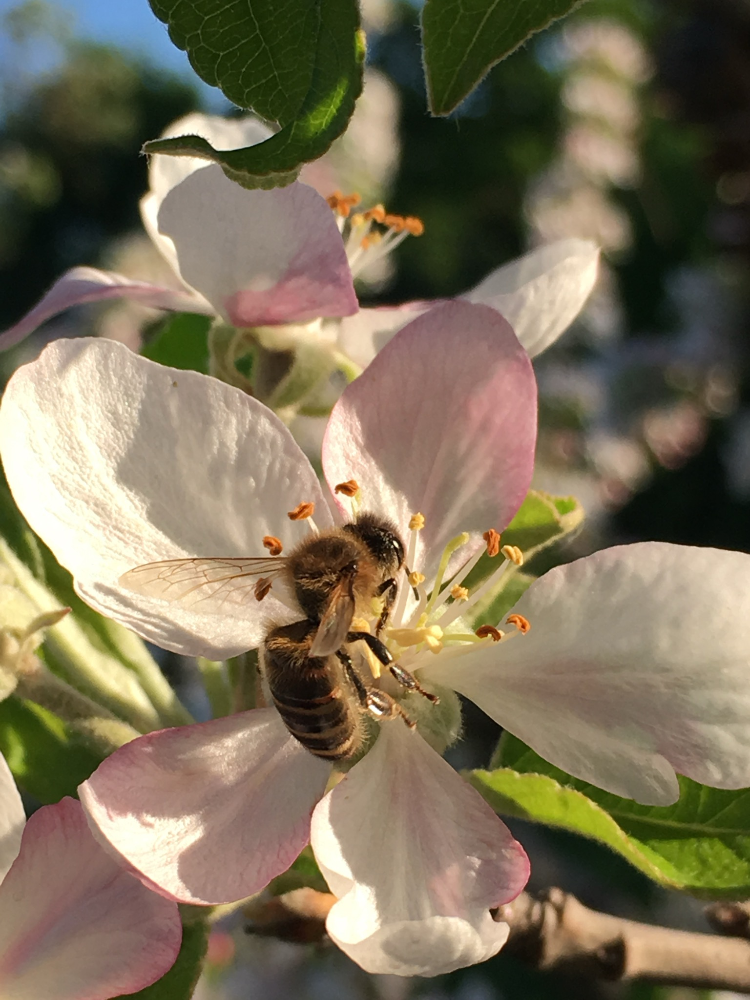

<main>

  <section class="mainContent">
    <h1>Notre Savoir faire</h1>
    <section id="garantConso">
      <h2>AB garantit au consommateur</h2>
      <p>
        La production biologique AB atteste d'une excellence environnementale à tous les stades.
        Par la mise en place de pratiques garantissant l'absence d'utilisation de produits chimiques de synthèse et d'OGM.
      </p>
      <p>Le mode de production biologique repose sur le respect des systèmes et cycles naturels,
        le maintien et l’amélioration de la santé du sol, de l’eau, des végétaux et des animaux.
        Tout cela contribue à atteindre un niveau élevé de biodiversité, et respecte des normes en matière de bien-être animal.
      </p>
    </section>
    <section  id="enjeuxTechnique">
      <h2>Les enjeux techniques en arboriculture biologique</h2>
      <p>
        La recherche d'équilibres biologiques, pour favoriser la biodiversité et minimiser la lutte directe ( aménagement des parcelles, haies ... )
      </p>
      <p>
        La recherche d'un équilibre de l'arbre : entre rendement et faible pression de maladies.
      </p>
      <p>
        La recherche de variétés plus adaptées à la production biologique qui conviennent à la fois aux besoins des producteurs ( résistance, maladies,
        moniliose, tavelure, gestion de l'alternance... )  et aux besoins du consommateur ( qualités gustatives, nutritionnelles )
      </p>
      <p>
        La recherche d'alternatives ( huiles essentielles, l'homéopathie... )
      </p>
      <p>
        La gestion du sol et la fertilisation pour favoriser une activité biologique qui mettra à disposition les éléments nutritifs
      </p>
    </section>
    <section id="agentPolinisateur">
      <h2>Soutenir la préservation de nos agents pollinisateurs</h2>
      <p>
        La présence d’insectes butineurs comme les abeilles, papillons
        ou bourdons, au sein de nos vergers, est indispensable à la pollinisation et donc au développement de nos fruits et légumes.
      </p>
      <p>
        C’est pourquoi nous installons dans nos vergers des ruches pour favoriser la pollinisation.
        Aujourd'hui, 88% des surfaces des vergers sont pollinisées en faisant appel à des apiculteurs et à leurs ruches.
      </p>
    </section>
    <section id="imagePolinisateur">
      
    </section>
    <section id="imageCavaillon" class="terroirSection">
      
    </section>
    <section id="terroirCavaillon" class="terroirSection">
      <h2>Terroir de Cavaillon</h2>
      <p>
        Le terroir de Cavaillon, avec nos vergers situés entre le
        Luberon et la Durance, présente des cultures uniques contribuant à une qualité de fruits exceptionnelle dans cette région
      </p>
    </section>
  </section>
</main>
